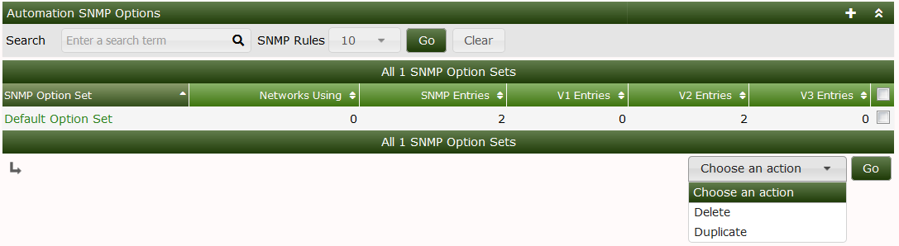

This section will describe SNMP Options in Cacti.
The SNMP options page is used to enter your SNMP Strings and Credentials to be used for the automation plugin in Cacti cacti support SNMP V1/V2/V3 below you will enter your networks specific SNMP details for the devices you will be polling
.
.
.
.
Important: When performing a network scan ensure that you select the SNMP options that contain the SNMP strings you want to use
Copyright (c) 2004-2024 The Cacti Group